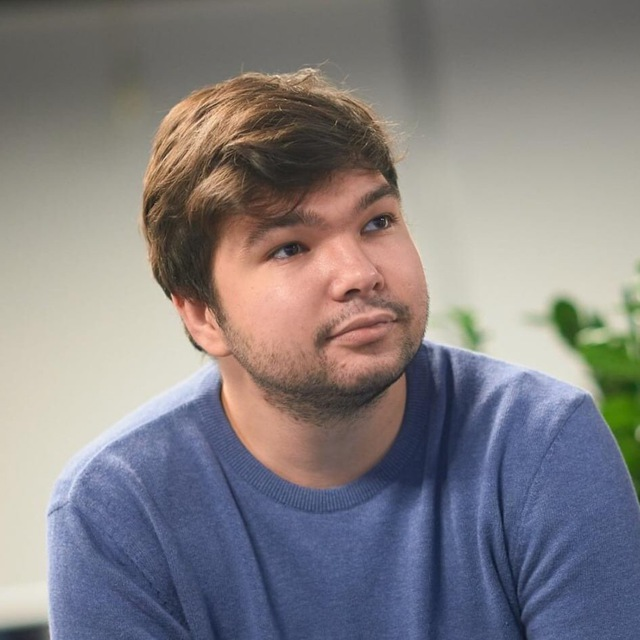

Hello!
I am a Machine Learning Research Engineer and a postgraduate student in Applied Mathematics at the National University of Kyiv-Mohyla Academy. My research direction involves the intersection of Machine Learning (ML), Computer Vision, and Reinforcement Learning focused on Healthcare and Intelligent Assistive Technology. My recent projects include devising deep learning architectures for various domains such as spatiotemporal, audio, and textual data. Currently, I am focusing on the Adversarial Robustness in Deep Learning models.
During my undergraduate sophomore year in Software Engineering, I have discovered the world of AI and got instantly attached to it. Since then I have orchestrated full ML development pipelines and designed a couple of end-to-end solutions still used in production. I am keen on teaching and mentoring everyone interested in Machine Learning.
In my free time, I read guest lectures, guide mentees, and run a DL paper review blog on Medium. I am always open for new collaborations, hit me up with an email if you want to chat!
Recent News
- 2022-03: Started an AI-centred Telegram channel and a Medium blog.
- 2022-02: Pitching solution for building new stores network system at AI/ML Ideathon 2.
- 2021-12: ML-centered lecture for students of Kyiv School of Economics.
- 2021-09: Pitched virtual try-on and wardrobe recommender system at WILD WILD HACK 2021.
- 2021-06: Got my Bachelors in SWE from NaUKMA.
- 2021-05: Architectured an open-data system for the State Register of Court Decisions for YouControl.